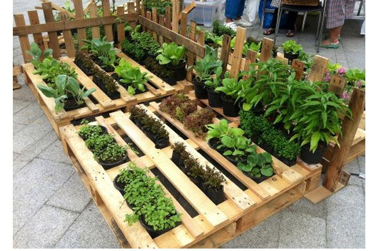
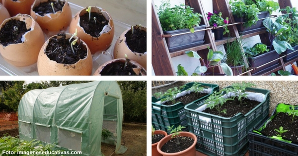

Estructura del proyecto"Sembrado de Hortalizas"Para comenzar, el proyecto escolar del COBAEV 46 sera llevar a cabo un huerto de hortalizas para que los alunos se familiaricen con el cuidado del entorno, ya que este es el proyecto principal que lleva relacion con todas las materias. Con el sembrado de horatalizas se pretende que esto se llebe a cabo, de esta manera mas adelante se dara seguimiento con el proyecto dando a conocer como se va a estructurar, como se sembraran las hortalizas, los veneficios que aporta este proyecto para la comunidad estudiantil, los pasos que lleba, cuanto tiempo tardaran para que den fruto y toda su informacion referente.
Lo primero que se tendra en cuanta para llevar a cabo el proyecto sera, elegir el terreno(ya sea elevado,en la pared,sobre la tierra etc..) despues los rescipientes y materiales que se necesitaran para la realizacion de la ortaliza, investigar y conseguir las semillas que se utilizaran para nuestra hortaliza, definir si se tendra o no a la interperie, luego de haber definido todo los factores podemos proseguir a los pasos para plantar las hortalizas y espera que todo salga bien con el pasar del tiempo.
Los pasos a seguir para la siembra son los siguientes 
1-Llenar el recipiente ( caja, plato, maceta,…) con tierra vegetal para germinación( sin poner abono ) o bien con turba o mantillo.
2-Compactar ligeramente la capa superficial del substrato a sembrar.Regar bien el recipiente de manera que el substrato a sembrar quede muy húmedo, pero evitando que se encharque el agua, dejando escurrir la sobrante.
3-Esparcir las semillas por encima uniformemente repartidas.
4-Cubrir las semillas con una capa de tierra vegetal de aproximadamente dos milímetros de grosor.
5-Mojar superficialmente la capa superior, evitando su encharcamiento pero procurando que quede muy húmeda hasta el momento de la germinación.
6-Tapar el recipiente con un plástico transparente para mantener la humedad ambiental, pero abriéndolo al menos una vez al día para dejar respirar la planta.
7-Colocar el recipiente en un lugar de semisombra, resguardado del frío y del fuerte viento ( puede tocarle el sol siempre y cuando no se caliente demasiado el substrato ).
8-Al cabo de entre 5 y 15 días según distintas variedades ya habrán germinado las plántulas.
9-Cuando las plantas posean de entre cuatro o cinco hojas ya podemos trasplantarlas en el lugar definitivo abonando el suelo y reduciendo los riegos.
En esta siguiente tabla se muestra algunos de los mejores abonos para las hortalizas y otra con los frutos que mas tienden darse en una hortaliza !!ADEMAS DE UN PEQUEÑO FORMULARIO JEJEJE!!
Estiércol Pieles de plátano Cascaras de huevo Recortes de césped Los posos del café Probablemente el mejor fertilizante natural tanto para el jardín como para la huerta. Se pueden comprar bolsas de estiércol descompuesto, aunque si tenemos animales lo ideal es que utilicemos sus propios excrementos después de haberlos compostado. Es un tipo de abono menos común que el estiércol aunque muy beneficiosos para nuestra tierra. Proporciona el potasio perdido por las planta y permite que las floraciones sean mayores. Simplemente hay que cavar un hoyo e introducir las pieles para que haga sus efectos. Además de fertilizante también hacen las veces de repelente. Tenemos que romperlas y tirarlas a los hoyos de nuestro huerto, aunque también podemos triturarlas hasta convertirlas en polvo y después expandirlas por la base de las plantas. Aportan carbono y calcio. Indispensables para nuestro huerto. Metemos el césped en una cubeta y después le aplicamos agua para dejarlo que se diluya durante un día. Después tenemos que coger este té y pulverizarlo sobre nuestras plantas. Esto nos aportará nitrógeno. Aunque parezca increíble, después de tomarnos una taza de café no tenemos que tirar sus posos. Estos pueden proporcionar una interesante cantidad de nitrógeno. Se pueden mezclar con el suelo o extenderlos por la superficie.
Frutos que mas tienden a darse en hortalizas. Verduras Frutas Tomate,Pimiento,Berenjena,Calabaza o zapallo,Calabacín,Pepino,Brocoli,Cebollin,Zanahoria Naranja,Platano,Manzana,Durazno,Sandia,Limon,Uvaz,Fresas,Pera etc..
HORTALIZAS:ESCRIBE TU NOMBRE correo electronico: repite tu correo: ¿Como nos conociste?: Tu pregunta es referente a:
Escribe lo que quieres preguntarnos: